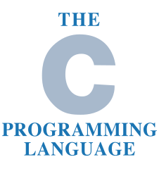
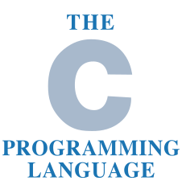
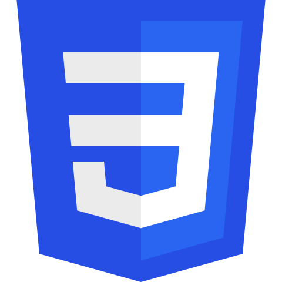
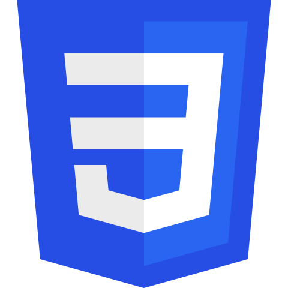

Education:
University at Albany, State University of New York
I was officially admitted to the university in August 2019. I am currently a Combined B.S./M.S. student studying Computer Science. I'm expecting to complete my undergraduate degree in May 2023 and complete my graduate degree in May 2024.
I major in Computer Science with minors in Mathematics and Informatics.
Relevant Coursework:
- Data Structures in Java
- Programming at the Hardware and Software Interface in C
- Design and Analysis of Algorithms in Java
Technical Skills:

 

I've primarily been programming in Java for most of the coursework and projects I've completed over the past 4 years. I also have some experience programming in Python through coursework and projects and the C Programming Language through coursework.
 



On the frontend, I have experience working with HTML5, CSS3, and JavaScript with web development. I also have experience using the JQuery library to enhance website content.
I also have experience using the Bootstrap4 framework to structure webpage content from an earlier project for a volunteer job.


All of my programs are written using Visual Studio Code and Eclipse IDE's. I also have introductory level experience with images in Adobe Photoshop.
Extracurricular Activities:
As well as being a Club Member, I'm currently serving as the Junior Vice Chair of the organization for the Fall 2021 to Spring 2022 academic year. I'm training under the current Vice Chair in hopes to become the Vice Chair in the future. Some of the duties I'm training for include room registration. I'm also responsible for promoting the organization throughout the campus community and helping other officers in their duties.
I was am Ambassador for the 2018 Hour of Code Event at my high school. During this event, I informed fellow schoolmates of the importance of coding through hands on exercises and videos. After the videos, participants were directed to a website that contained simplified progrmaming activities to work on such as programming a game character to move forward.
Work Experience:
I have worked at Subway part-time since April 2019. Throughout my time there, I've improved my public speaking skills as well as my critical thinking and problem-solving skills. I've also learned how to work under pressure through lunch and dinner rushes.
I worked as the Web Developer and Assistant Secretary of Chinese-American Sports and Community Service Association (CASCSA) from March 2018 to August 2019. Throughout my time there, I've become more proficient at using Microsoft Excel to create attendance forms for the programs offered there.
I also voluntarily redesigned and rebuilt the organizations website using HTML, CSS, and the Bootstrap4 framework.